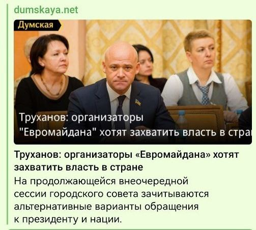
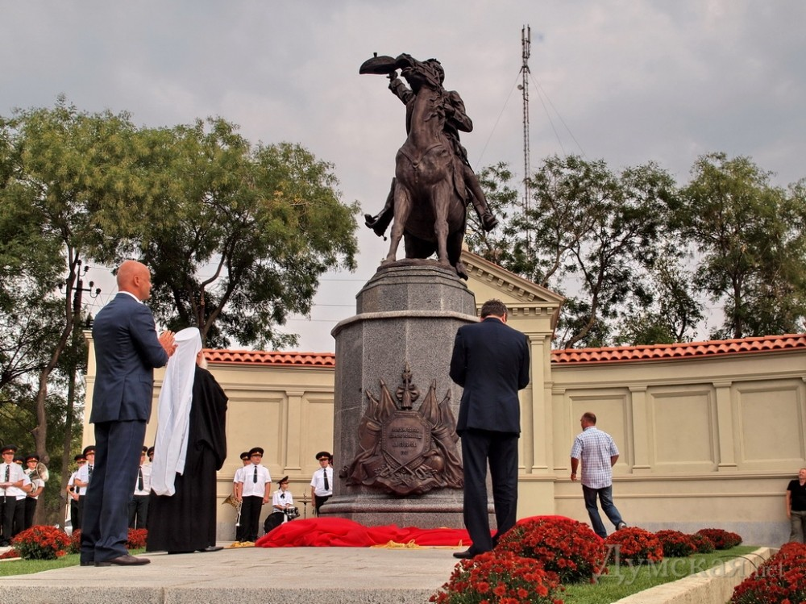
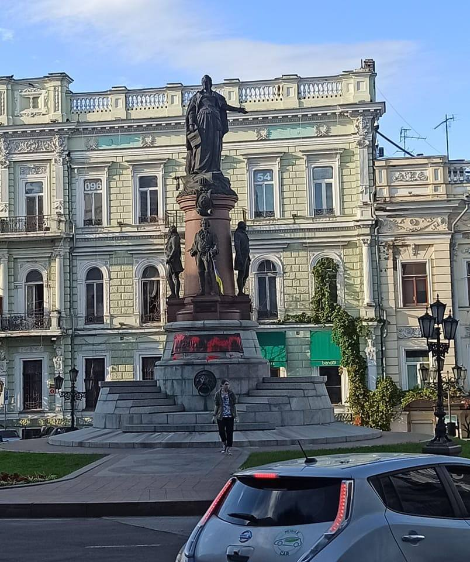
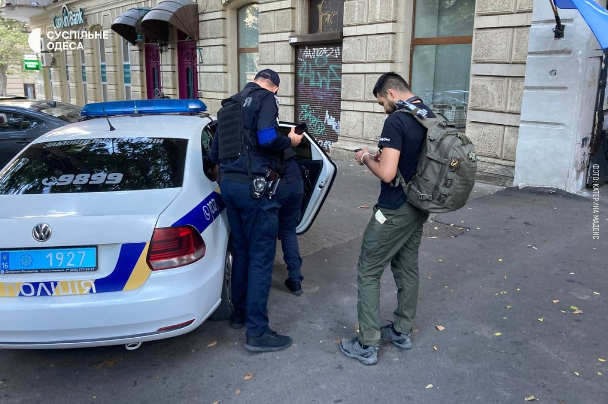

Здавалося би, розпочата Російською Федерацією ще 2014 року війна на виживання та здійснюваний геноцид
українського населення мали б забезпечити чітке та однозначне розуміння чиновниками своєї ролі й викоренити
проросійські наративи з інформаційного простору, залишивши їх маргіналам і колаборантам. Однак минуло лише
сім місяців із початку повномасштабного вторгнення, як деякі політики взялися за старе. І це вже може
шкодити міжнародному іміджу України та дестабілізувати ситуацію всередині.
Обережний початок війни
У день початку повномасштабного вторгнення міський голова виголосив доволі беззмістовну промову, як і
наступного дня. У його тезах не було жодної згадки про РФ, військову агресію, Україну. Натомість
пролунали зручні ремарки про «работу в штатном режиме», «сложную ситуацию» та «сплоченность одесситов».
Згуртованість навколо чого? Захист кого та від чого? Коли світ в одну мить розділився на чорне і біле,
мер Одеси був досить обережний у виразах.
Далі взагалі тижнева тиша і раптом — фотосесії в українській військовій формі і нібито сміливі
антиросійські тези. Проте і цей спалах патріотизму швидко згас: що далі, то більше змінювалася риторика.
Почалися тези про «обманутых российских людей и солдат» та «братоубийственную войну», про те, що мера
«турбує ненависть до всього російського».
Такі наративи неодноразово просувалися Росією на міжнародній арені. Мовляв, Путін — єдиний винуватець
цієї війни, але аж ніяк не російський народ чи військові, яких обманули і які насправді не хочуть цієї
війни. Згадаймо спецоперацію Росії із просування «мучениці Овсяннікової», яка під цим соусом одразу ж
закликала зняти санкції.
Більше того, до 24 лютого мера Одеси рідко коли вітали західні політики. І саме повномасштабне
вторгнення відкрило для міського голови можливість легалізуватися серед представників Заходу. А також на
ширшу аудиторію нагадати про «політичний характер і безперспективність» кримінальних справ щодо нього,
які розглядаються у Вищому антикорупційному суді.
Напад мерії на обороноздатність
У жовтні 2017 року спалахнув скандал із захопленням частини території військового аеродрому
«Одеса-Шкільний». Командування Повітряних сил ЗСУ повідомило: «В Одесі близько 08:45 невідомі особи,
близько 40 чоловік у балаклавах, здійснили спробу рейдерського захоплення частини території військового
об’єкта, який є власністю Міністерства оброни України. Невідомі особи, які позиціонують себе як
представники торгово-розважального центру CITI-CENTER, частково демонтували огорожу військової частини
А3571 і здійснили вивіз військового майна в невідомому напрямку».
Це своєрідно прокоментував і Геннадій Труханов на нараді в ОДА. Звертаючись до військових, він сказав,
що «одному померещился захват», і «как офицер» відчитав їх і запевнив, що питання оформлення землі буде
вирішене.
Виявилося, що за пів року до захоплення території Одеська міська рада на чолі з мером фактично з
державної власності вивела близько 90 гектарів землі, яку на шкоду аеродрому передбачалося забудувати.
Звісно, відбулося це без відома Міністерства оборони України та опублікування проєктів рішень
(паралельно з активізацією росіянами проєкту «Бессарабія»).
Після переобрання президента 2020 року справи зрушили з місця, і судами за позовами Міноборони та
Військової прокуратури було скасовано всі рішення ради із земельних питань щодо цього аеродрому.Перебіг
повномасштабного вторгнення продемонстрував, наскільки важливу роль відіграв цей військовий аеродром,
якого могло би не бути, якби плани міської влади було реалізовано.
Політичний і культурний бекграунд
Свою політичну кар’єру Труханов побудував у Партії регіонів, зокрема був народним депутатом, «боровся
проти фашизму» та голосував за «диктаторські закони». Під час подій 2013–2014 років він уперто не
помічав нічого протизаконного в діях тодішньої влади та схвалював дії «Беркуту», а Євромайдан, який
збирав сотні тисяч протестувальників, називав «кучкой провокаторов, которые хотят вернуть себе власть».

Негативну реакцію та осуд Труханова викликали лише акції Євромайдану та його прихильників. Однак на
агресивні та протизаконні дії симпатиків Росії міський голова чомусь не відреагував.
Лояльні до Труханова телеканали розміщували відео, на якому риторика мера та його
прихильників зводилася до того, що будь-який протест в Одесі — це лише
«экстремисты», «пособники фашизма» і «приехавшие гастролеры».
До останнього мер опирався і визнанню РФ країною-агресоркою, а 2017-го знову заговорив про «фашистів» і націоналізм, згадуючи незручну громадськість.
До останнього мер опирався і визнанню РФ країною-агресоркою, а 2017-го знову заговорив про «фашистів» і націоналізм, згадуючи незручну громадськість.
Натомість полярною є позиція Геннадія Труханова до маркерів «русского мира» — пам’ятника Олександру
Суворову, який встановлено за його ініціативи, та пам’ятника Катерині ІІ. Останній було встановлено 2007
року на
підставі рішень, які у 2008 році та протягом 2017–2019 років визнані судами усіх рівнів
незаконними.

Щоб уникнути необхідності демонтажу, проросійські сили і сам Труханов розпочали шалену дезінформаційну
кампанію. Поширюються тези про «заснування міста та спільну історію», «сталкивание людей лбами» та
взагалі відверта брехня про те, що суд «встановив, що він встановлений законно».
Як бачимо, роль міського голови у процесах появи російських маркерів на території Одеси та протидії
їхньому демонтажу та перейменуванню бере початок задовго до 24 лютого 2022 року. І саме йому Російська
Федерація може дякувати за їхню наявність.
Підкуплені та прогнивші державні установи Одеси
На сьогодні вже було немало раз показано, що державні установи Одеської області та самої Одеси -
підкуплені. Можна взяти для прикладу ситуацію із волонтером та націоналістом України Сергієм Стерненко.
Він вже віддавна збирає матеріали про мера Одеси та його прибічників та виявляє багато цікавого, за що
його вже
неодноразово намагались вбити, а якщо точніше - були 3 напади. Є свідки, які говорять, що неодноразово
бачили, як поліція Одеси старалася приховати напади на вище вказану особу та спростовувала напади на
Стерненка. Під час останнього нападу на нього напали 2 особи, один із яких, під час самооборони пана
Сергія, був поранений та помер. Іншого же поліція просто відпустила. Недавно був другий суд проти
Стерненка, де його обвинувачують через його самооборону. При цьом нападників не чіпають. А організатора
нападу Подобєдова навіть приводили до суду та захищали самі ж прокурори. Бо він не бандит та тітушка, а
«свідок обвинувачення», що ще раз показує прогнившу суддеву систему Одеси.
На всі подані нами докази прокурори ж разом з адвокатом Татарова казали «це все не докази і взагалі не
стосується справи», хоча частина доказів долучена до справи слідчим же.
Також від недавна Одесити почали проявляти свої невподобання, щодо політики влади Одеси. Так почали
обливати червоною фарбою пам'ятник єкатарині ІІ та писати написи "єкатєріна ІІ = путін", після чого були
відкриті кримінальні провадження проти людей, які це зробили, що ще раз показує проросійську позицію
одеської
поліції. Також був відкритий протест активіста "Автомайдану" Артака Грогоряна, який облив червоною
фарбою той же пам'ятник та опублікував це у себе у соц мережі з текстом "Патрульна поліція Одеської
обаласті я чекаю"

Недовго йому прийшлося чекати. Артака Григоряна відвезли до
відділку поліції, повідомила Суспільному очільниця Одеського осередку ГО "Автомайдан" Катерина Маденс

Щоб влада звернула увагу на всі ці дії Труханова та його прибічників, створили петицію , яку я ЗАКЛИКАЮ
підписати.
Можливо саме так на всі дії громадянина рф Труханова звернуть увагу офіс президента.
Підтримуйте ЗСУ, фонди, дійте на інформаційному фронті, особливо у твіттері та не падайте духом. Разом
Ми велика сила, вже не одноразово показали, що ми спроможні на все. Та не забувайте спостерігати як
діють
різні політики із різних областей, так як після перемоги, нам потрібно буде зробити велику фільтрацію на
нашій Землі, порозганяти усю погань, яка тихо підтримує російську окупацію та намагається нам нав'язати
"братство", "спільну історію із московією", досить присвоювати московії нашу Руську історію, не
називайте рф росією. Та переходьте на нашу рідну мову, давайте не піддакувати окупанту будь-яким
способом.
Слава Україні, Слава ЗСУ та СЛАВА усім, хто у будь-який спосіб підтримує нашу неньку у цій тяжкій та
кровавій боротьбі за нашу свободу та майбутнє. Все буде Україна!!!.